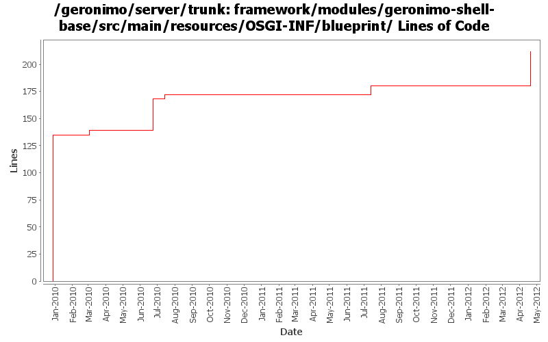

[root]/framework/modules/geronimo-shell-base/src/main/resources/OSGI-INF/blueprint

| Author | Changes | Lines of Code | Lines per Change |
|---|---|---|---|
| Totals | 13 (100.0%) | 218 (100.0%) | 16.7 |
| genspring | 3 (23.1%) | 139 (63.8%) | 46.3 |
| gawor | 9 (69.2%) | 71 (32.6%) | 7.8 |
| chirunhua | 1 (7.7%) | 8 (3.7%) | 8.0 |
GERONIMO-6331: Simple shell commands for generating thread dump and finding deadlocked threads
32 lines of code changed in 1 file:
support bundle installation and uninstallation from Karaf Shell
8 lines of code changed in 1 file:
GERONIMO-5702: Update for Karaf 2.1.2. Based on patch from Viola Lu
3 lines of code changed in 3 files:
GERONIMO-5421: GoGo command for unlock-keystore plus other related fixes and improvements. Initial patch from Chi Runhua
4 lines of code changed in 1 file:
Improved Geronimo OBR support. Contains fix for GERONIMO-5392 as well as support for excludes and a shell command for refreshing the repository
29 lines of code changed in 1 file:
consistent naming
1 lines of code changed in 1 file:
GERONIMO-5213: Fix a bunch of Geronimo Karaf shell commands. Add support for 'embedded' mode where the commands know they are executing in a server shell and do not require a jmx connection
1 lines of code changed in 1 file:
fix typo
1 lines of code changed in 1 file:
GERONIMO-3003 create karaf command wraaper for encryptCommand, patch from Vanessa Wang.
4 lines of code changed in 1 file:
GERONIMO-4948 To migrate existing geronimo gshell commands to karaf based shell. --- committing migrated commands into shell-base. Thanks Vanessa for her help.
135 lines of code changed in 2 files: